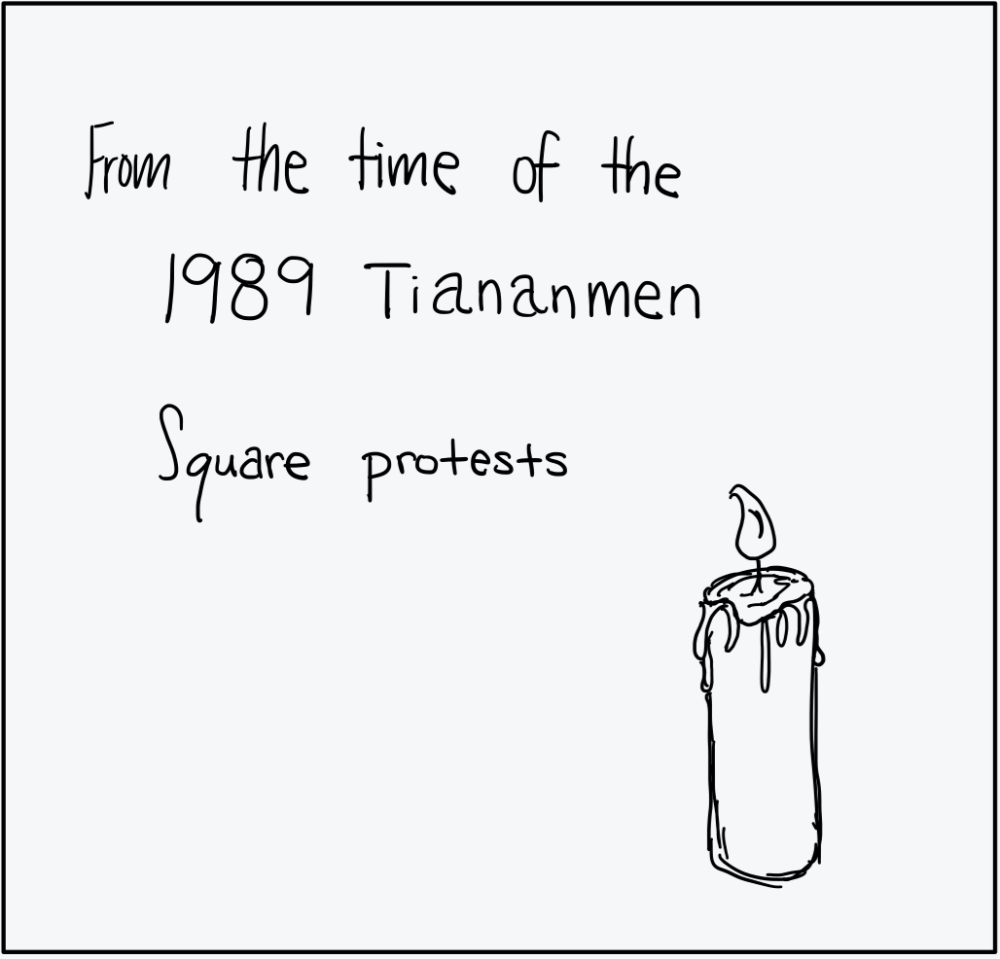
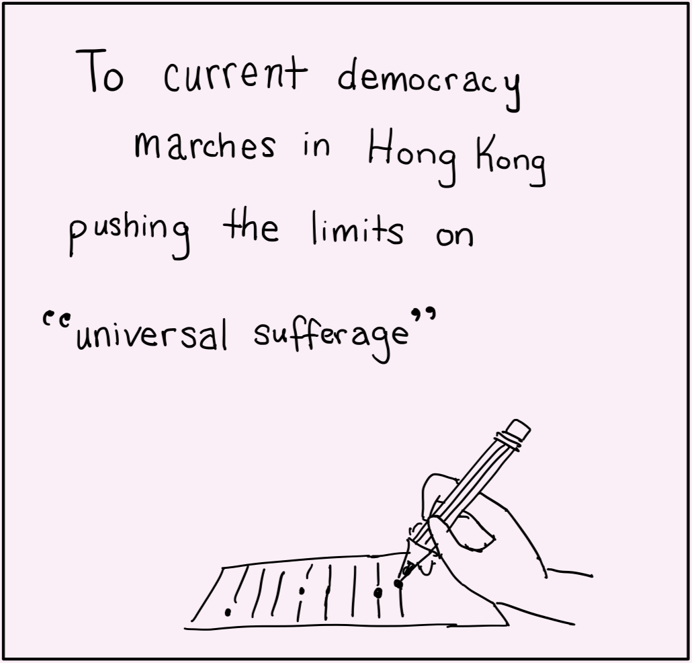
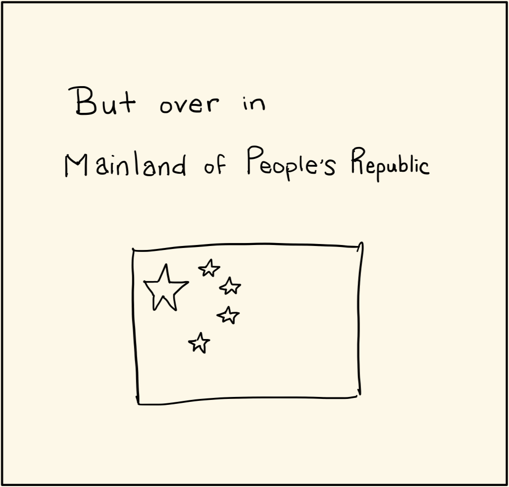
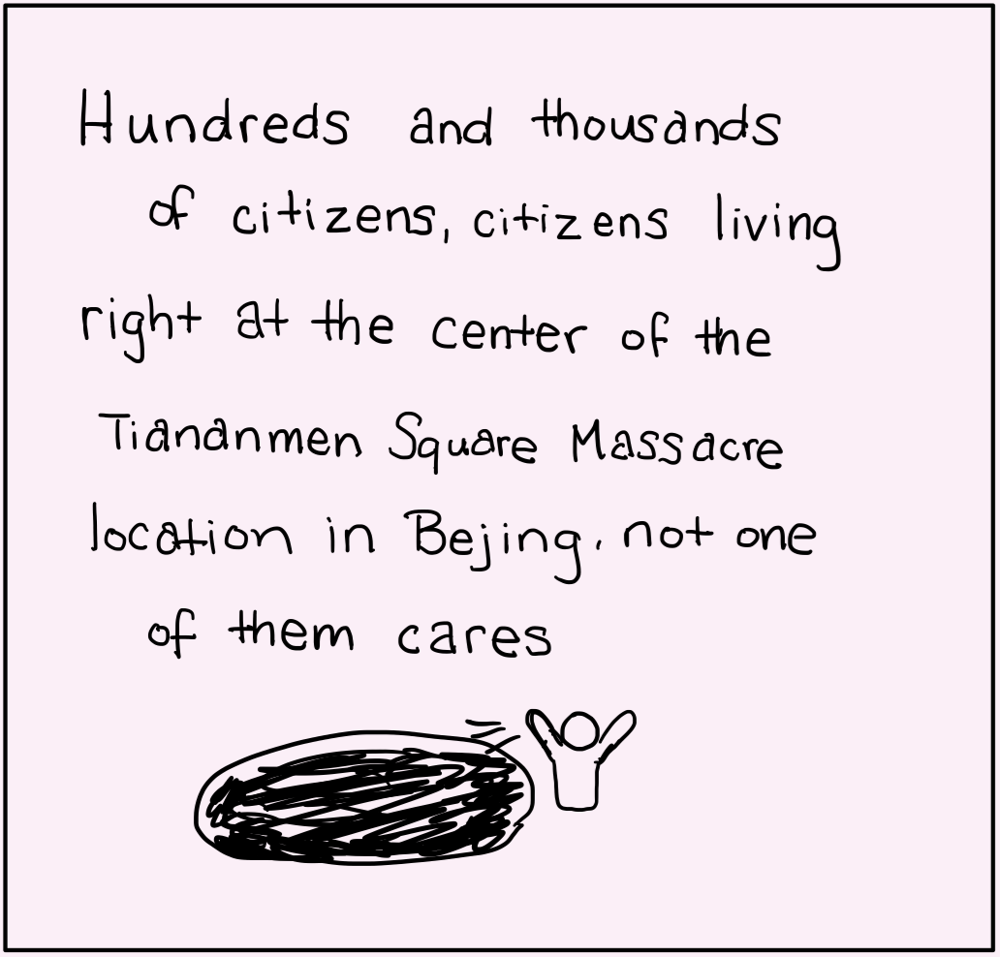
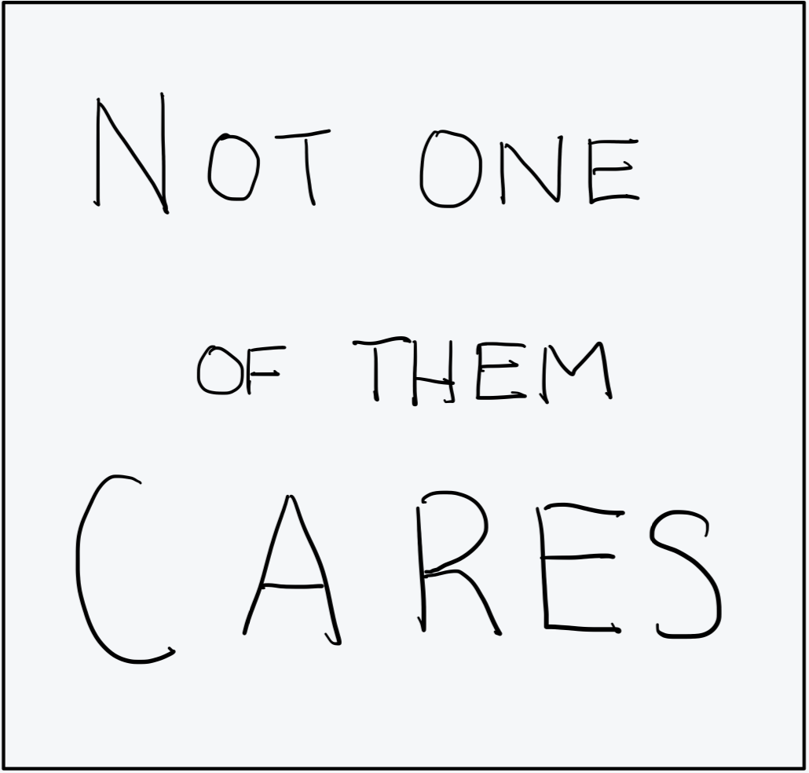
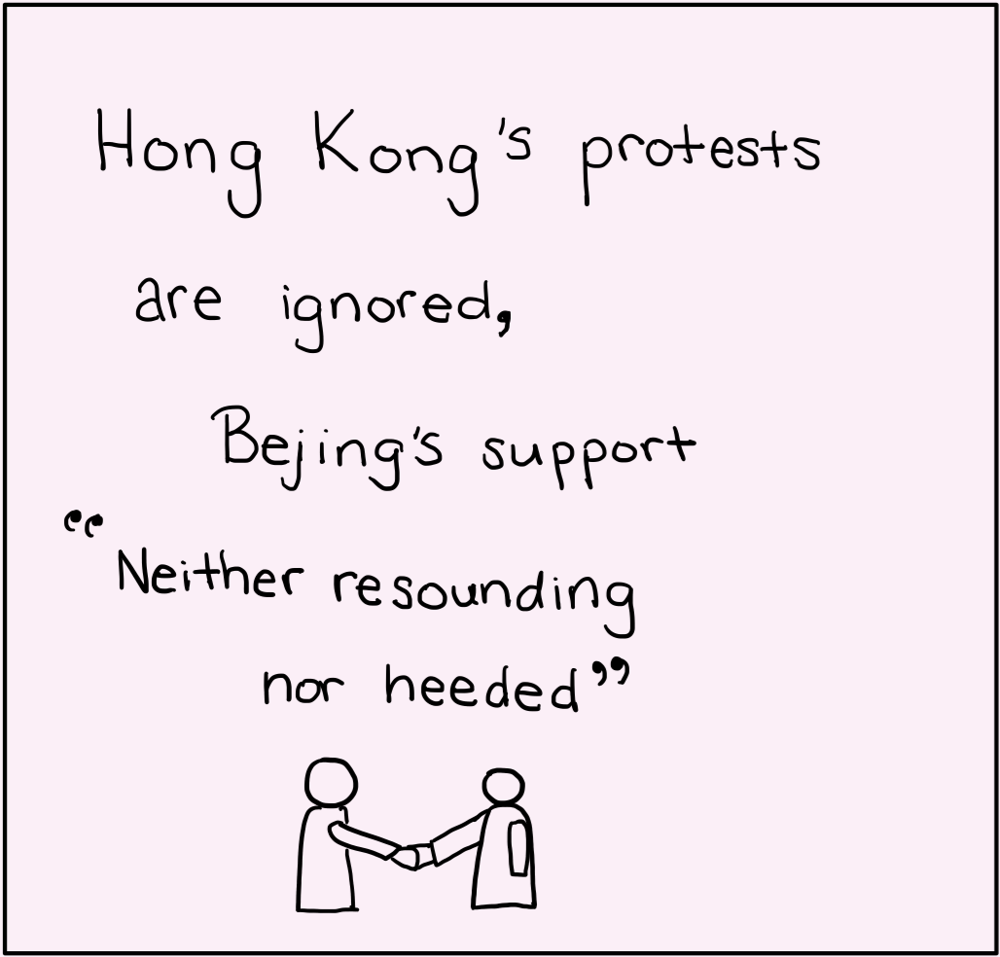
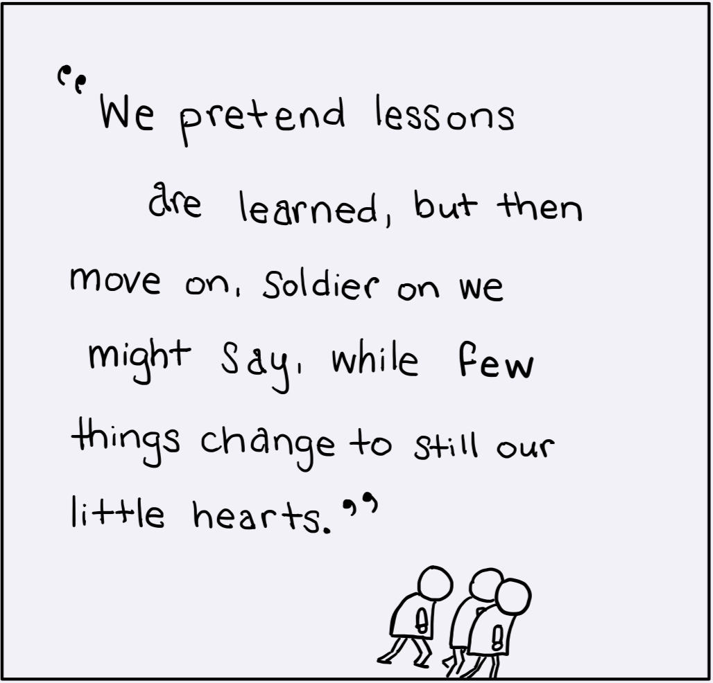

Author's Note
- Back when I wrote Evanescent Isles, I would not have said the citizenry necessarily sought international political support.
- What it mostly wanted was the economic opportunity that made the city wealthy.
- Beijing’s indifference today to what the rest of the world thinks is currently a work-in-progress, especially since Russia invaded Ukraine and the world began isolating Russia.
- But as far as Hong Kong people, they desperately wanted international support in both 2014 and 2019, but I'm not sure the protestors generally understood how little any such support mattered to Beijing. That was a strategic mistake.
- You probably know the famous saying attributed to Mao — A revolution is not a tea party? Our revolutionaries were at first too politely peaceful and later much more violent but had no military to support them.
- Mao’s long march succeeded because his revolutionaries were not afraid of and were prepared for war.
- Hong Kong-ers never realized till too late that war might have been their only recourse if they truly wanted democracy.